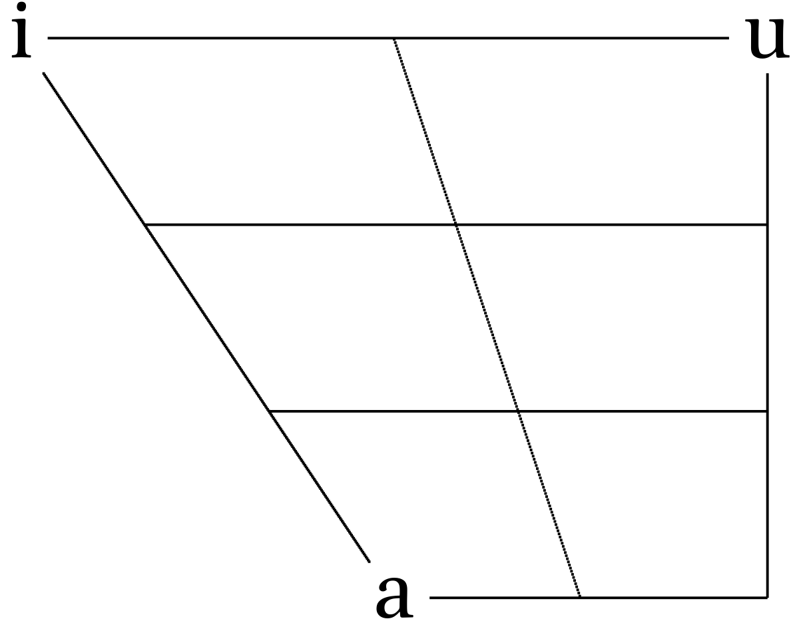

3 Vowels
3.1 Theory
3.1.1 Recap
- Sound waves can be described as
\[ s(t) = A \times \cos(2\pi ft + \phi) \]
A — amplitude;
f — is the fundamental frequency;
φ — phase;
t — time.
Speech sounds are complex waves
Fourier transform — allows to extract components of the complex wave
3.1.2 How shape of the vocal tract influences on vowels? Tube model.
Historically, height and backness are impressionistic linguistic terms:

But we are intersted just in a cardinal points:


If we analyze acoustics we can get something like this:

| i | a | u | |
|---|---|---|---|
| F1 | 300 | 700 | 300 |
| F2 | 2300 | 1400 | 800 |
However, if we analyze real sounds it could be messy:
Tube model, after (Fant 1960): vocal tract is a tube or a set of tubes:

3.1.3 Wavelength

\[c = \frac{\lambda}{T} = \lambda\times f \approx 33400\text{ cm/s}\]
- c — speed of sound;
- λ — wavelength;
- f — sound frequency;
- T — period.
Neutral vocal tract in the position for the vowel ə:

Resonance is a phenomenon in which a vibrating system or external force drives another system to oscillate with greater amplitude at specific frequencies. The lowest natural frequency at which such a tube resonates will have a wavelength (λ) four times the length of the tube (L).
\[c = \frac{\lambda}{T} = \lambda\times f \approx 33400\text{ cm/s}\]
The tube also resonates at odd multiples of that frequency.
\[F_1 = \frac{c}{\lambda} = \frac{c}{4 \times L} \approx 500 \text{ Hz}\] \[F_2 = \frac{c}{\lambda} = \frac{c}{\frac{4}{3} \times L} = \frac{3 \times c}{4 L} \approx 1500 \text{ Hz}\] \[F_3 = \frac{c}{\lambda} = \frac{c}{\frac{4}{5} \times L} = \frac{5 \times c}{4 L} \approx 2500 \text{ Hz}\] \[F_n = \frac{c}{\lambda} = \frac{c}{\frac{4}{n} \times L} = \frac{n \times c}{4 L} \approx n \times 500 \text{ Hz}\]
Something like this we can expect from animals:

When there is a constriction, back tube and constriction form Helmholtz resonator.
\[f = \frac{c}{2\pi} \times \sqrt{\frac{A}{V\times L}}\]
- A — the area of the neck;
- L — length of the tube;
- V — volume of the air in the body.

3.1.4 Other models
- Perturbation Theory [Kajiyama 1941, Mrayati et al. 1988]
- Quantal Theory (Stevens 1972)
- Theory of adaptive dispersion (Lindblom and Maddieson 1988)
Fant, G. 1960. Acoustic Theory of Speech Production. Paris: Mouton.
Fletcher, N. 2007. “Animal Bioacoustics.” In Springer Handbook of Acoustics, edited by Thomas D. Rossing, 785–804. New York: Springer.
Lindblom, Björn, and Ian Maddieson. 1988. “Phonetic Universals in Consonant Systems.” Language, Speech and Mind 6278.
Stevens, K. N. 1972. “The Quantal Nature of Speech: Evidence from Articulatory-Acoustic Data.” Human Communication: A Unified View.